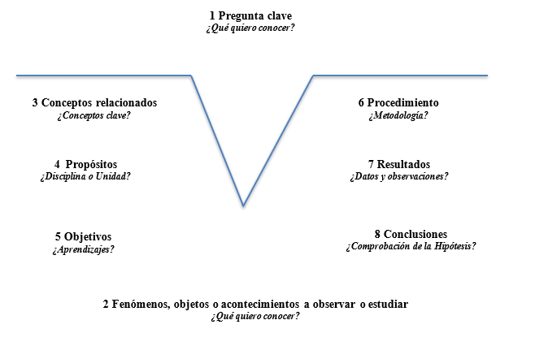

Último paso
10. CONSTRUCCIÓN DE UNA V DE GOWIN
- Para terminar con el tema debes elaborar una V de Gowin de las actividades desarrolladas.

11. GLOSARIO
- Realizar un glosario de terminos nuevos.
§ Agar nutritivo: Medio de cultivo general utilizado para el crecimiento de bacterias heterótrofas no exigentes.
§ Agar sal y manitol (MSA): Medio de cultivo selectivo y diferencial que permite el crecimiento de Staphylococcus y diferencia entre especies fermentadoras y no fermentadoras de manitol.
§ Alcohol–acetona: Mezcla utilizada en la tinción de Gram como agente decolorante que elimina el cristal violeta de bacterias Gram negativas.
§ Bacterias Gram positivas: Bacterias que poseen una pared celular gruesa de peptidoglicano y retienen el cristal violeta, observándose de color morado al microscopio.
§ Bacterias Gram negativas: Bacterias con una pared celular delgada y una membrana externa con lipopolisacáridos, que pierden el cristal violeta y se tiñen de rojo/rosado con safranina.
§ Bioseguridad: Conjunto de normas y medidas destinadas a proteger a las personas, el ambiente y las muestras biológicas en prácticas de laboratorio.
§ Biótica: Relativa a los seres vivos; en microbiología, se refiere a los factores vivos que intervienen en los ecosistemas, incluidos los microorganismos.
§ Cristal violeta: Colorante primario utilizado en la tinción de Gram que se fija en la pared de peptidoglicano de las bacterias Gram positivas.
§ Cultivo bacteriano: Técnica que consiste en sembrar bacterias en medios nutritivos para favorecer su crecimiento y posterior estudio.
§ Hipótesis: Suposición provisional que se plantea para explicar un fenómeno y que debe comprobarse experimentalmente.
§ Lugol (Yodo Gram): Mordiente utilizado en la tinción de Gram que fija el cristal violeta en la pared bacteriana.
§ Medio de cultivo: Preparación sólida o líquida que contiene nutrientes necesarios para el crecimiento de microorganismos.
§ Microscopio compuesto: Instrumento óptico que permite observar estructuras celulares no visibles a simple vista mediante un sistema de lentes y aumentos.
§ Morfología bacteriana: Forma y disposición de las bacterias, por ejemplo: cocos (esféricos), bacilos (alargados), espirilos (helicoidales).
§ Safranina: Colorante de contraste utilizado en la tinción de Gram para teñir bacterias que no retuvieron el cristal violeta (Gram negativas).